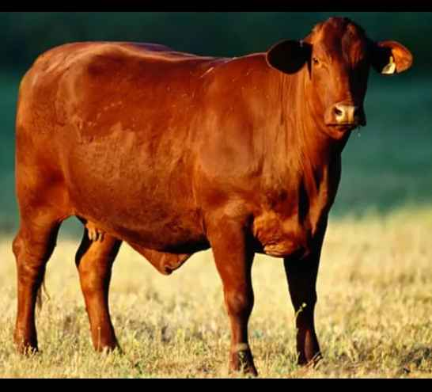
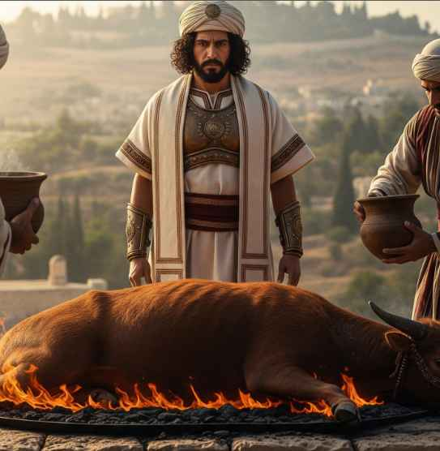
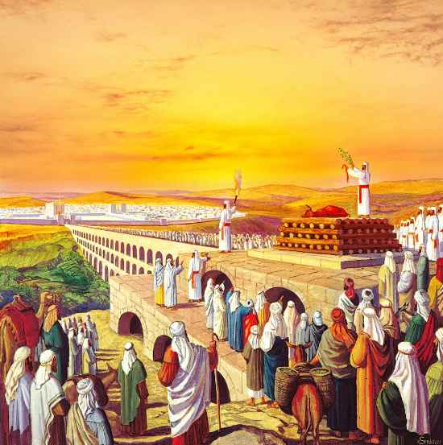

RED HEIFER

Introduction
In Judaism, the red heifer — a cow that has never given birth, been milked, or tied up — holds a special ritual significance. According to the Torah, it must be offered as a sacrifice, and its ashes are used to purify those who have come into contact with a dead body. Jewish tradition states that only nine red heifers have been sacrificed throughout history.
The red heifer is later slaughtered and used as a burnt offering, with its ashes mixed into a purifying paste. According to Jewish belief, this purification process is required before entering the ancient Temple site in Jerusalem, and thus it is seen as a prerequisite for beginning the construction of a new temple.
The recent birth of a red heifer — from a black-and-white heifer and a mixed-color bull — has been described by activists who support building the Third Temple as a “miracle.” They believe this signals the potential arrival of the Jewish messiah. Tradition requires waiting until the heifer reaches the age of three before it can be used as a sacrifice, after which, they believe, the new spiritual era may begin.
Theories
The sacrifice of the red heifer is an essential ritual in Jewish tradition. According to Jewish law, its ashes grant the highest level of ritual purity and are used to cleanse those who have come into contact with a dead body. This purification is considered necessary before entering the Temple Mount and for performing sacred duties within the Temple.
One of the five red heifers will be slaughtered, burned, and its ashes mixed with an aqueous solution to produce the purification mixture described in the Torah. Jews who are sprinkled with this mixture are then permitted to enter the Temple Mount. Priests descended from Aaron, the first High Priest of Israel, must undergo this purification before entering the Temple compound, and a future High Priest would require it to enter the Holy of Holies on Yom Kippur.
The current cow selected for sacrifice is said to be one of five genetically modified heifers that have been turned red. According to some claims, its ashes are intended to be mixed into the Silwan spring, which certain groups believe will purify them in preparation for building a new Temple on the Temple Mount.

Relating to the topic, The Simpsons once aired an episode that seems oddly similar to the current situation with the red cows. The episode named ‘Apocalypse Cow’ which was first aired in 2008. Although not identical, it’s fascinating to consider
“How much more will the blood of Christ… cleanse our conscience from acts that lead to death, so that we may serve the living God!” – Hebrews 9:14
Our sages of old told a parable of a slave girl whose infant son defiled the king's palace with his excrement, and was therefore required to clean her child's mess. Relating this to the golden calf, our sages said, "Let the mother (the red heifer) clean up the child's mess (the golden calf)", and thereby repent for his defilement.
According to the Book of Numbers in the Torah (Old Testament), the carcass of a red heifer (without blemish, pure red in color, and unburdened by a yoke) is burned outside the camp, and its ashes are mixed with pure water to be sprinkled on the "defiled" by the uncleanness of the dead (Tomah Hamet). This ritual is considered a divine ordinance for purification, performed only by a ritually pure priest, and the ashes are kept in stone vessels for many years.
Some believe that there are global powers (governments and religious organizations) that want to use the red heifer to begin a “new era of spiritual domination.” This falls under what they call the New World Religion or “Unified World Religion.”
Some believe that the appearance of the red heifer is a premonition from global elites preparing for a global event (war - economic collapse - the formulation of a new order). And that this ritual is used to create a religious shock that moves billions of people.
Some believe that ash possesses “energy that opens gateways” between worlds, or that it is used to cleanse certain places before the construction of a huge temple or a global spiritual center. They have linked it to theories such as Ley Lines or “earth energy lines”.
Some accounts suggest there is significant political and financial support from extremist American Christian groups who want to see "end-times prophecies fulfilled," and that the transfer of the cows to Israel is not an ordinary event but part of a plan.
Islam
In the Holy Quran: Surah Al-Baqarah (verses 67-73), God commands the Children of Israel to slaughter a cow. This cow was ordinary (its color is not specified in the Quran), but the Children of Israel were obstinate and asked about its color and characteristics, so God made it difficult for them until the cow became bright yellow.
In radical or conspiratorial Islamic circles: the slaughter of the red cow is the “great sign” that will trigger the emergence of the Mahdi or the Antichrist or the beginning of the great epic.
There are claims and rumors circulating in some Islamic circles linking the ashes of the "red heifer" (Bara Adumah in Jewish tradition) to satanic rituals or the revival of ancient secret Canaanite practices.
In Islamic discussions, the ritual is viewed as a "Zionist trick" to justify the demolition of Al-Aqsa Mosque, not as a satanic ritual (as in the fatwa on Islamweb). Fundamentalist Christians (such as Evangelicals) support the ritual as a "sign of the return of Christ," but without any satanic connection.
History
Some alternative scholars (such as those in books on "hidden history") claim that the red heifer ritual is derived from secret Canaanite practices (before 3000 BCE), in which the Canaanites offered sacrifices of red animals (symbols of fertility or deities such as Baal or Ishtar) to be burned, and their ashes used in fertility rites or purification from "evil spirits." It is said that the Jews secretly "revived" these rituals to "restore ancient Canaanite power," especially given the site's proximity to the historical land of Canaan.
The origins of this belief go back nearly 2,000 years, when the ancient Romans destroyed Jerusalem’s last temple in 70 BC. According to the Book of Numbers, a red heifer is required for the purification rituals necessary before reconstructing the Temple.
Moses ben Maimon (Maimonides) wrote in Mishnah Torah, Para Aduma, Chapter 3: “From the time this commandment was given until the destruction of the Second Temple, nine red heifers were offered. The first was brought by Moses our teacher, the second by Ezra, and seven more were offered until the destruction of the Second Temple. The tenth will be brought by the Messiah King, may his arrival come quickly. Amen.”
Jewish tradition states that nine red heifers have been sacrificed throughout history:

- Moses sacrificed the first red heifer.
- Ezra sacrificed the second red heifer.
- Simeon the Just sacrificed the third red heifer.
- Ishmael son of Bijavi sacrificed the fourth red heifer.
- Hanamiel the Egyptian sacrificed the fifth red heifer.
- Ishmael son of Bijavi sacrificed the sixth red heifer.
- Hanamiel the Egyptian sacrificed the seventh red heifer.
- Hanamiel the Egyptian sacrificed the eighth red calf.
- Ishmael son of Bijavi sacrificed the ninth red calf.
Research
The Temple Institute was founded in 1987 by Rabbi Yisrael Ariel and has recreated artefacts for rituals required in a new temple
As per the gathered information, Yitshak Mamo, from Uvne Jerusalem, played a vital role in bringing these cows to Israel. He explained that locating these special cows took years and led him to Christian ranchers in Texas. Now, these cows graze in a secret location in the West Bank.
According to some sources, members of the Third Temple group were looking for a red heifer "that matched the description of the one used for purification in their holy books."
The perfect cow has apparently not been seen for two thousand years. This has reportedly prompted some Jewish and evangelical Christian activists, who also believe in the rebuilding of the Third Temple, to breed their own breed of red heifer.
Israeli authorities are reportedly preparing to hold a ritual ceremony involving the slaughter of a red heifer in the occupied West Bank, to mark the Islamic holiday of Eid al-Fitr on April 10, which is April 2 according to the Hebrew calendar.
Reports have surfaced about Israel importing cows from Texas to fulfill an ancient biblical prophecy, accompanied by emerging details of a massive altar being readied in Jerusalem. This ancient ritual, tracing back to the time of Moses and laden with religious importance, has garnered global attention. According to Jewish tradition, a perfectly red heifer is essential for a purification ritual crucial for the construction of a Third Temple in Jerusalem—a fervent aspiration for certain radical Jewish factions, who believe it will herald the arrival of the messiah. However, the proposed temple's location on the Temple Mount in Jerusalem's Old City, alongside the Al-Aqsa Mosque and the Dome of the Rock shrine—two of Islam's holiest sites—adds complexity, as it has historically been a flashpoint for conflict between Israelis and Palestinians. Since Moses' era, only nine red heifers have been sacrificed, underscoring the rarity and gravity of the impending tenth sacrifice. Attention now focuses on Israel, where preparations for this ceremonial offering are said to be at an advanced stage.
While some people see these cows as pets, for others they are meant for a solemn purpose. Apparently. they are to be slaughtered on an altar overlooking the Mount of Olives in Jerusalem as part of a temple-rebuilding ceremony.
The five red calves, which were flown to Israel a month ago from Texas via Kennedy Airport, after spending ten days in quarantine, now live on a farm in the Galilee region of Israel.Their escape to Israel was the culmination of a two-year effort to identify and verify each cow's qualifications (only completely red hair, no injuries or scars, red color on its flesh and hooves), and to meet all legal requirements in the United States and Israel for importation into Israel, where they are now cared for and monitored.
Numbers 19:1-6 And the Lord spake unto Moses and unto Aaron, saying, 2 This is the ordinance of the law which the Lord hath commanded, saying, Speak unto the children of Israel, that they bring thee a red heifer without spot, wherein is no blemish, and upon which never came yoke: 3 And ye shall give her unto Eleazar the priest, that he may bring her forth without the camp, and one shall slay her before his face: 4 And Eleazar the priest shall take of her blood with his finger, and sprinkle of her blood directly before the tabernacle of the congregation seven times: 5 And one shall burn the heifer in his sight; her skin, and her flesh, and her blood, with her dung, shall he burn: 6 And the priest shall take cedar wood, and hyssop, and scarlet, and cast it into the midst of the burning of the heifer.
Tuhan berfirman: Katakan kepada Anak-anak Israel bahwa mereka menyediakan seekor heifer(sapi) merah kepadamu yang tidak berbintik, di mana padanya tiada kecacatan, dan sapi itu tidak pernah digunakan untuk membajak," Injil ke-empat Perjanjian Lama, Taurat Yahudi.
Hundreds of visitors gathered in Shiloh, in the Benjamin region of Samaria, to welcome a pure red heifer, considered biblical in origin. The 22-month-old cow was brought from the United States and is now at the Shiloh archaeological site. Next month, two more heifers will be brought to Shiloh, and a research center will be established to study this phenomenon. The heifers will be kept in a fenced area, and visitors will have no direct contact with them.
Hamas spokesman acknowledge that their group's Oct 7 attack was provoked by Israel acquiring these unblemished red cows and making preparations to seize control of their faiths sacred site of worship.